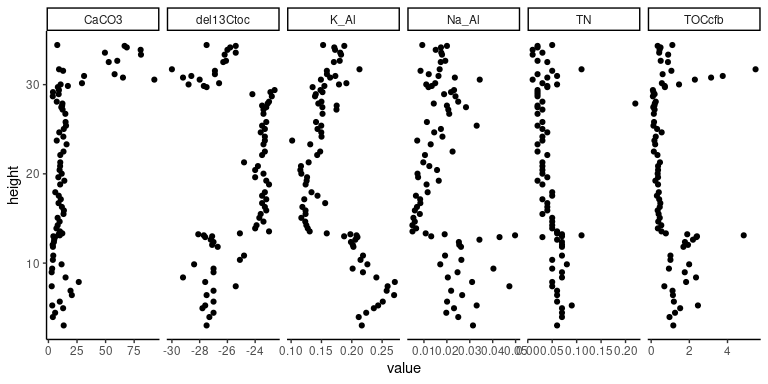

The package PAGES is the supportive material of a webinar designed for the PAGES Early-Career Network (ECN). The goal is to give some useful pointers to explore geological data, in particular stratigraphic occurrences, and uses RStudio and packages from the tidyverse universe.
R for Data Science (R4DS)
This class is modelled after Hadley Wickham’s and Garrett Grolemund’s R4DS. However, I have augmented the examples with cases from geology.
![Book cover [@Wickham2016]](reference/figures/cover.png)
Book cover (Wickham and Grolemund 2016)
Credits
The construction of the R (R Core Team 2021) package PAGES and associated documentation was aided by the packages; devtools (Wickham, Hester, and Chang 2021), roxygen2 (Wickham, Danenberg, et al. 2020), knitr (Xie 2021, 2014, 2015), rmarkdown (Allaire et al. 2021; Xie, Allaire, and Grolemund 2018; Xie, Dervieux, and Riederer 2020), bibtex (Francois 2020), and the superb guidance in the book: R packages: organize, test, document, and share your code, by Wickham (2015). In addition, this package relies on a set of external packages from the tidyverse universe, including: dplyr (Wickham et al. 2021), tidyr (Wickham 2021), tibble (Müller and Wickham 2021), readr (Wickham and Hester 2020), magrittr (Bache and Wickham 2020), and readr (Wickham and Hester 2020). Plots are made with ggplot2 (Wickham, Chang, et al. 2020; Wickham 2016) and thematic (Sievert, Schloerke, and Cheng 2021) is used for a consistent design in the presentation.
The package marelac (Soetaert and Petzoldt 2020) is used for chemical data and transformations, and the package datasauRus (Locke and D’Agostino McGowan 2018) is used as an example for the strength of plotting data.
Installation
You can install the released version of PAGES from github with:
# Install PAGES from GitHub:
# install.packages("devtools")
devtools::install_github("MartinSchobben/PAGES", build_vignettes = TRUE)Data sources
The study on the Triassic–Jurassic (~201 million years before present) boundary section of Bonenburg (Germany) and Kuhjoch (Austria) by Schobben et al. (2019) is used as the example material for this course. Lazy load datasets constitute:
-kuhjoch - Kuchjoch is a palynological dataset where the counts have summed for spores, pollen, aquatic and terrestrial elements.
-bonenburg - Bonenburg is a geochemical dataset containing: elemental analyser total organic carbon (TOC) and total nitrogen (TN), XRF element data; Aluminium (Al), Potassium (K) and sodium (Na), as well as the carbon isotope composition of TOC (del13Ctoc).
Raw datasets (kuhjoch_raw.csv and bonenburg_raw.csv) can be easily accessed with the PAGES_example() function and a call to the readr function read_csv().
readr::read_csv(PAGES_example("kuhjoch_raw.csv"))Exercises
Details regarding the exercise and live programming during the webinar can be found under the package vignettes (called with vignette()).
- RStudio projects:
vignette("project", package = "PAGES") - Exploratory data analysis:
vignette("explore", package = "PAGES") - Patterns and models:
vignette("model", package = "PAGES") - Load, tidy and transform data:
vignette("wrangle", package = "PAGES")
Tidy format
The lazy load datasets are provided in a tidy format. Look-up directory data-raw on the Github repository for details on the data processing.
head(bonenburg)
#> # A tibble: 6 x 11
#> section strat strat2 sampleid height CaCO3 TN del13Ctoc TOCcfb Na_Al K_Al
#> <chr> <chr> <chr> <dbl> <dbl> <dbl> <dbl> <dbl> <dbl> <dbl> <dbl>
#> 1 Bonenb… Cont… Pre-e… 0 3.01 13.3 0.06 -27.5 1.16 0.0314 0.216
#> 2 Bonenb… Cont… Pre-e… 100 3.95 3.84 0.07 -27.3 0.96 0.0250 0.211
#> 3 Bonenb… Cont… Pre-e… 150 4.43 5.86 0.07 -27 1.25 0.0197 0.224
#> 4 Bonenb… Cont… Pre-e… 200 4.94 12.8 0.07 -27.8 1.52 0.0231 0.236
#> 5 Bonenb… Cont… Pre-e… 250 5.25 3.34 0.09 -27.6 2.45 0.0330 0.243
#> 6 Bonenb… Cont… Pre-e… 275 5.68 9.91 0.06 -27 1.19 0.0201 0.251Besides wide format data the similarly named datasets with the suffix _long are used to generate, for example, multi-proxy stratigraphic plots for initial data exploration.
ggplot(data = bonenburg_long) +
geom_point(mapping = aes(x = value, y = height)) +
facet_grid(cols = vars(measurement), scales = "free_x") +
theme_classic()
References
- Roxygen2: In-Line Documentation for r. https://CRAN.R-project.org/package=roxygen2.